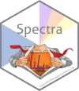
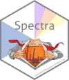

This repository provides use cases and examples for the annotation of non-target metabolomics or small compound MS data using the MetaboAnnotation and MetaboCoreUtils R packages. Refer to the original article A Modular and Expandable Ecosystem for Metabolomics Data Annotation in R to cite this package/repository or any functionality described here.
Installation
Requirements: R version >= 4.2 (and hence Bioconductor 3.15) is needed.
The R packages as well as the example files used in this document can be installed with the R code below:
install.packages("BiocManager")
BiocManager::install("jorainer/MetaboAnnotationTutorials",
dependencies = TRUE, ask = FALSE, update = TRUE)Alternatively, the packages can be installed individually with:
install.packages("BiocManager")
BiocManager::install("ProtGenerics")
## Packages with low-level core functionality
BiocManager::install("MsCoreUtils")
BiocManager::install("MetaboCoreUtils")
## Packages with high-level user functionality
BiocManager::install("Spectra")
BiocManager::install("MetaboAnnotation")
BiocManager::install("CompoundDb")
## Support for MGF files
BiocManager::install("MsBackendMgf")
## Support for MassBank
BiocManager::install("MsBackendMassbank")
## Support for MSP files
BiocManager::install("MsBackendMsp")The source code for this document along with the test data can be downloaded from the github repository https://github.com/jorainer/MetaboAnnotationTutorials with the command (or alternatively downloading the zip archive directly from the github page).
git clone https://github.com/jorainer/MetaboAnnotationTutorialsContribution
For contributions, see the RforMassSpectrometry contributions guideline.
Code of Conduct
See the RforMassSpectrometry Code of Conduct.
Additional documentation resources and tutorials
- Tutorial with additional examples and explanations for MS2-based annotations: https://jorainer.github.io/SpectraTutorials/
- Repository of the
MsCoreUtilspackage: https://rformassspectrometry.github.io/MsCoreUtils/ - Repository of the
MetaboCoreUtilspackage: https://rformassspectrometry.github.io/MetaboCoreUtils/ - Repository of the
Spectrapackage: https://rformassspectrometry.github.io/Spectra/ - Repository of the
MetaboAnnotationpackage: https://rformassspectrometry.github.io/MetaboAnnotation/ - Repository of the
CompoundDbpackage: https://rformassspectrometry.github.io/CompoundDb/